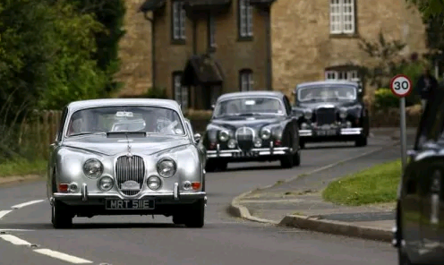
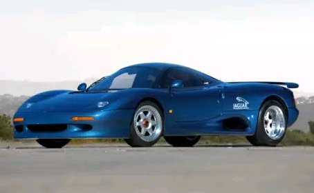

Categories
Here’s a list of our top 10 Jaguar of all time
Jaguar has made some of the fastest, sexiest and most outlandish sports cars in history. And, of course, each offered a distinct British charm. From the original SS 100 to the current F-Type, Jaguar sports cars have had the substance to back up their style. But what is the best of the best from the big cat manufacturer? Some choices are obvious, while others are hidden gems.

Jaguar Mark 1 and Mark 2Not exactly a pure sports car, the Jaguar Mark 1 and Mark 2 were compact saloons (British for sedans) that had an incredible amount of racing success. Powered by a choice of inline-six engines, it was the 3.4-liter Mark 1 and 3.8-liter Mark 2 cars that were the serious performers. Names like Roy Salvadori, Bob Jane and, of course, Sir Stirling Moss himself all found success behind the wheel of the Jaguar Mark 1s and 2s. |
|---|
Jaguar XKReleased in 1996, the XK succeeded the XJS as Jaguar’s grand touring coupe and convertible. With a sexy body, the XK had the performance to back up its sleek silhouette. Initially only available with a 290-hp 4.0-liter V8, a 370 supercharged version of that V8 would join the XK lineup a few years later. By the time the second-generation XK was discontinued in 2014, this big Jaguar coupe was available with a 550-hp 5.0-liter V8 engine in the bonkers XK-RS. |
|---|
SS Jaguar 100As a successor to the SS Jaguar 90, the SS 100 is considered by many as the first real Jaguar sports car ever made. Delivering the performance that the SS 90 was missing, the SS Jaguar 100 initially came with a 2.5-liter six-cylinder engine that would later be replaced by a 3.5-liter inline six-cylinder. With 125 hp, these larger engine cars could break the 100 mph top speed referred to by the vehicle’s name. |
|---|
Jaguar F-TypeJaguar’s first true sports car since the E-Type, the F-Type logically continues Jag’s sport car tradition by assuming the next letter in the alphabet and adding ‘-Type’. The two-seat coupe or convertible comes with a choice of supercharged engines, in either six or eight-cylinder form. As well, a manual transmission and all-wheel-drive iterations of the F-Type can now be had. |
|---|
Jaguar XJ-SFor two decades, the XJ-S (and later, XJS) would carry the Jaguar performance flame. Available initially as a coupe, the convertible and targa models would eventually join the lineup. Various six and 12-cylinder engines would be offered throughout the years, with a 6.0-liter V12 being the largest, most powerful option offered. In 1988, a special XJR-S model was created offering more style and performance. |
|---|
Jaguar XK120, XK140 and XK150As Jaguar’s first sports car developed after the Second World War, the 1948 XK120 is still regarded to this day as one of the best-looking cars ever made. Powered by a 3.4-liter six-cylinder engine, the XK120 initially made 160 hp but would reach 210 hp by 1954. In 1954, the XK120 was replaced by the XK140 that offered a series of upgrades including a more powerful base engine. By 1957, the XK150 would be released, the final of the original XK line. It differed greatly from the XK120 and XK140 and could be had with as much as 265 hp. |
|---|
Jaguar XJR-15Produced from 1990 until 1992, 53 of these Jaguar supercars were made. Basically a Le Mans prototype race car for the road, the XJR-15 came equipped with a mid-mounted 6.0-liter V12 engine making 450 hp. Weighing just a bit more than 2,300 lbs, the XJR-15 could rocket to 60 mph in under four seconds and achieve just shy of 200 mph in top speed. As exotic and rare as the XJR-15 was, it would be its successor that would really captured the world’s attention. |
|---|
Jaguar XKSSIn 1956, Jaguar decided to resign from sports car racing, but it had a bunch of leftover D-Type race car chassis lying around. What to do? The simple solution was to add a few basic modifications, like the addition of a passenger seat, and sell them as road-going cars called the XKSS. Not many of these cars were ever produced and some never even left the factory due to an unfortunate fire. Survivors today are worth insane amounts of money. |
|---|
Jaguar XJ220Before the McLaren F1 or the Bugatti Veyron, there was the Jaguar XJ220. Quite possibly the world’s first hypercar, the XJ220 was like nothing else on the road. Powered by a mid-mounted, twin-turbocharged 3.5-liter V6 engine, the XJ220 produced 542 hp and could reach a top speed well more than 200 mph. But it wasn’t just incredible performance that makes the XJ220 such an icon. Its beautiful, sexy shape looks fast even when standing still. Today, more than 20 years later, the XJ220 would still look like it belongs at your local Jaguar new car showroom. |
|---|
Jaguar E-TypeThis is a pretty obvious choice for the best Jaguar of all time. Whereas many consider the XK120 to be one of the best-looking cars of all time, the E-Type is thought to be the best-looking car ever created, period. And its sexy good looks were backed up by its performance. Initially available with a 3.8-liter six-cylinder, the E-Type’s engine would expand to 4.2-liters before getting replaced by a 5.3-liter V12 in the E-Type Series 3. Although all E-Types are great cars, it’s the Series 1 that are the most coveted to this day. |
|---|
 Ferrari
Ferrari Honda
Honda Ford
Ford Suzuki
Suzuki Lamborghini
Lamborghini Lexus
Lexus Jaguar
Jaguar BMW
BMW GMC
GMC Mercedes-Benz
Mercedes-Benz